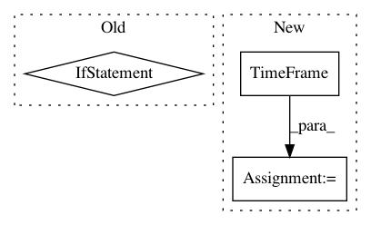

c601465be8de05db85a625dac868904342e7ad1e,nilmtk/datastore.py,HDFDataStore,load,#HDFDataStore#Any#Any#Any#Any#Any#,52
Before Change
data.look_ahead = pd.DataFrame()
// Set timeframe
data.timeframe = (window_intersect if window_intersect
else self._get_timeframe(key))
if len(data.look_ahead) > 0:
data.timeframe.end = data.index[-1]
yield data
After Change
if len(data) > 0:
data.timeframe = TimeFrame(data.index[0], data.index[-1])
else:
data.timeframe = TimeFrame()
yield data
def append(self, *args, **kwargs):
In pattern: SUPERPATTERN
Frequency: 3
Non-data size: 3
Instances
Project Name: nilmtk/nilmtk
Commit Name: c601465be8de05db85a625dac868904342e7ad1e
Time: 2014-07-09
Author: jack-list@xlk.org.uk
File Name: nilmtk/datastore.py
Class Name: HDFDataStore
Method Name: load
Project Name: nilmtk/nilmtk
Commit Name: 5eeca7d385178092790e08c1d5ad6cbcff35d3dc
Time: 2014-12-11
Author: jack-list@xlk.org.uk
File Name: nilmtk/metergroup.py
Class Name: MeterGroup
Method Name: load
Project Name: nilmtk/nilmtk
Commit Name: 2a8e39cdf3c36048bd5279c554d4f8fd521891c6
Time: 2014-11-26
Author: jack-list@xlk.org.uk
File Name: nilmtk/stats/goodsectionsresults.py
Class Name: GoodSectionsResults
Method Name: import_from_cache